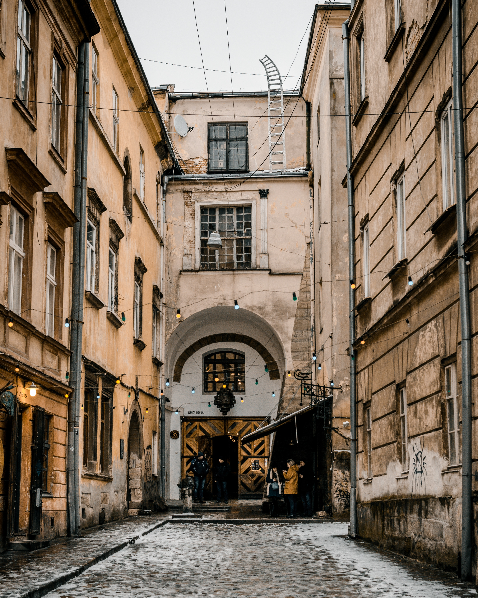

Lviv

Vladimir Paly, architect, architectural office “Zelemin”
I am impressed by the house on Ivan Franko Street, 26 - it is one of the first functional buildings in Lviv. It applied a number of innovative solutions of that style. For example, one of the first fire hydrants in the city was installed inside the house.
The long roof hangs visually enlarge the small building and form an additional intermediate space, which is formally on the street but is in fact a continuation of the temple. In Ukrainian villages, traditionally only a part of the parishioners listened to worship in the temple, while all others stood under the roof and listened to the priest through the walls, unable to see what was going on inside. It is an impressive element of culture.
The house was built in the early 30's of the twentieth century, among the existing ones. Therefore, inside the walls do not have straight angles and obey the vectors of older buildings, but this did not affect its external simplicity and rhythm inherent in functionalism.
I learned from a local resident that there was a concierge room on the ground floor and the owner's apartments on the last floor. They occupied the entire floor, had an open terrace, and were combined with the servants' quarters, which had a separate entrance from the stairwell. In Soviet times there was an attempt to redevelop the house, but now the apartments have been redeemed and restored a convenient initial gradation - two apartments on the floor.
The uniqueness of the house on Frank Street lies in its urban layout.
It conceals the main idea of architect Vitold Minkiewicz.
It is revealed by looking at the facade, the accent of which is the bay window [part of the room protruding from the plane of the facade. - Buro 24/7]. The nuanced bay window, located exactly on the axis of Green Street, was to complete its perspective. This has not happened, however, because the older two-story building still divides Minkiewicz's and Green's house.